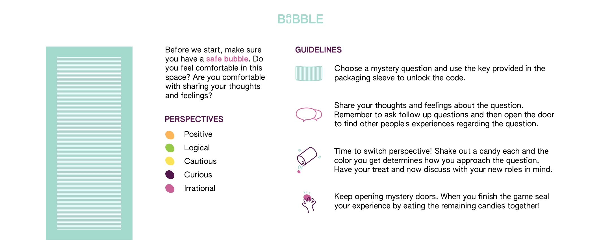

Babble Bubble is a game for 12+ year olds that aims to break the stigma surrounding wellbeing, identity, pleasure, relationships, and body image to improve sex education. How can we promote autonomy, competence, and relatedness whilst opening conversations on sensitive topics surrounding sexual and emotional health?

PART 1: HOW TO PLAY
Adolescents are first presented with a puzzle on the packaging to access discussion questions. As players, their role is to share their thoughts and feelings about the questions, and ask follow up questions to one another.

Candies can be shaken out of the packaging, where each color is associated with a perspective for players to contribute to the conversation from. This allows each player to contribute without revealing their personal perspective (if they are uncomfortable), allowing them to be more likely to engage in discussion, and leading to high levels of self-consciousness, perspective-taking, and empathy.

Hidden cards can be found behind the doors to read about anonymous adult experiences related to each specific question. By providing a variety of experiences, children can more effectively gain knowledge by challenging current biases and finding an experience that resonates with their personal ones, rather than simply being told what is right or wrong.

PART 2: GAME DESIGN
Eating creates a positive opportunity for initiating conversations and enhancing communication skills. Thus, Babble Bubble utilises snacks to create a comfortable environment for uncomfortable conversations. Utilising packaging manufactured with cheap and accessible materials, such as recyclable cardboard and wax paper, Babble Bubble is low cost and consequently, easily accessible to adolescents who want to purchase it without their guardians.

(Paper packaging laser cut)
The culture of silence around sexual health and relationships is not supporting sexual and emotional well-being. Babble Bubble gives adolescents safe resources and space to take ownership over their holistic well-being, integrating the game with snack packaging to bring adolescents together whilst teaching about stigmatized topics in well-being, such as communication, boundary setting, body image, and the emotional side of sex.
In this project, we researched the current global sex education curriculum and built a design intervention to address aspects in which it is lacking. Globally, sex education curriculum primarily consists of risk prevention, leaving minimal opportunities for children to engage in open conversations, leading to association with aversive emotions, such as disgust, fear, and shame and sexual disorders.
→ Read our full report here ↗
→ Fall 2022 (5 Weeks)
→ Design Psychology
→ Instructors: Nejra Van Zalk, Charlotte Slingby
→ Collaborators: Sade Heino, Caini Liu, Brook Yichun Shen